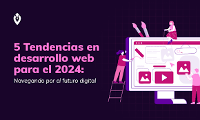
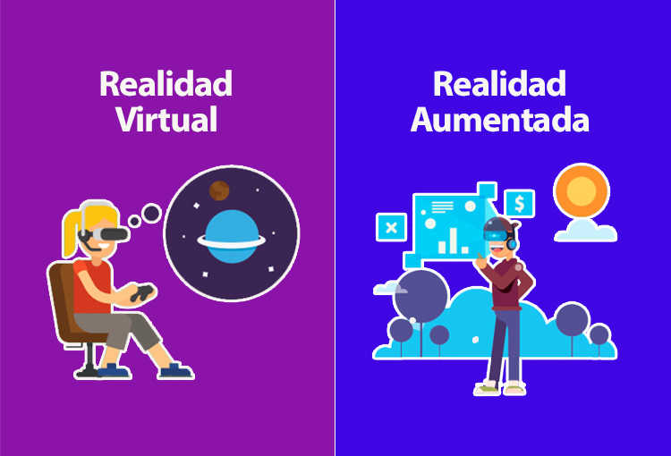

Explorando la Inteligencia Artificial
Descubre los últimos avances en el campo de la IA y cómo están transformando nuestro día a día. Desde algoritmos predictivos hasta sistemas de aprendizaje profundo.
Leer ArtículoDescubre los últimos avances en el campo de la IA y cómo están transformando nuestro día a día. Desde algoritmos predictivos hasta sistemas de aprendizaje profundo.
Leer Artículo
El desarrollo web nunca se detiene. Conoce las tecnologías emergentes como WebAssembly, Progressive Web Apps y los frameworks más populares de 2025.
ExplorarEn un mundo cada vez más digital, la ciberseguridad es fundamental. Aprende consejos prácticos para mantener tu información personal y empresarial segura.
Más InfoLas energías limpias son el futuro. Analizamos las últimas innovaciones en energía solar, eólica y geotérmica que están marcando la pauta global.
Ver Detalles
Sumérgete en los mundos inmersivos de la RV y la RA. Exploramos sus aplicaciones en educación, entretenimiento y la industria.
DescubrirSi eres nuevo en el desarrollo web, esta guía te dará los fundamentos esenciales de HTML5 para construir tus primeras páginas.
EmpezarLleva tus habilidades de CSS al siguiente nivel con trucos y técnicas para crear diseños responsivos y atractivos.
Ver TutorialAprende las bases de JavaScript ES6 y cómo añadir interactividad dinámica a tus sitios web. Incluye ejemplos prácticos.
Aprender JSPaso a paso para instalar Visual Studio Code, Git y Node.js, y tener tu entorno listo para codificar.
ConfigurarConsejos y recursos para diseñar y lanzar tu portafolio en línea, esencial para desarrolladores y creativos.
Crear PortafolioUna selección de librerías CSS que acelerarán tu flujo de trabajo y mejorarán el diseño de tus proyectos.
DescubrirDescubre las mejores herramientas online y offline para comprimir y optimizar tus imágenes sin perder calidad.
OptimizarUna colección curada de fuentes tipográficas de alta calidad y gratuitas para tus próximos proyectos.
Ver FuentesReseñas de las mejores plataformas para aprender programación y diseño web a tu propio ritmo.
ExplorarEncuentra tu tribu: únete a foros y comunidades para resolver dudas, compartir conocimientos y conectar con otros devs.
Unirse